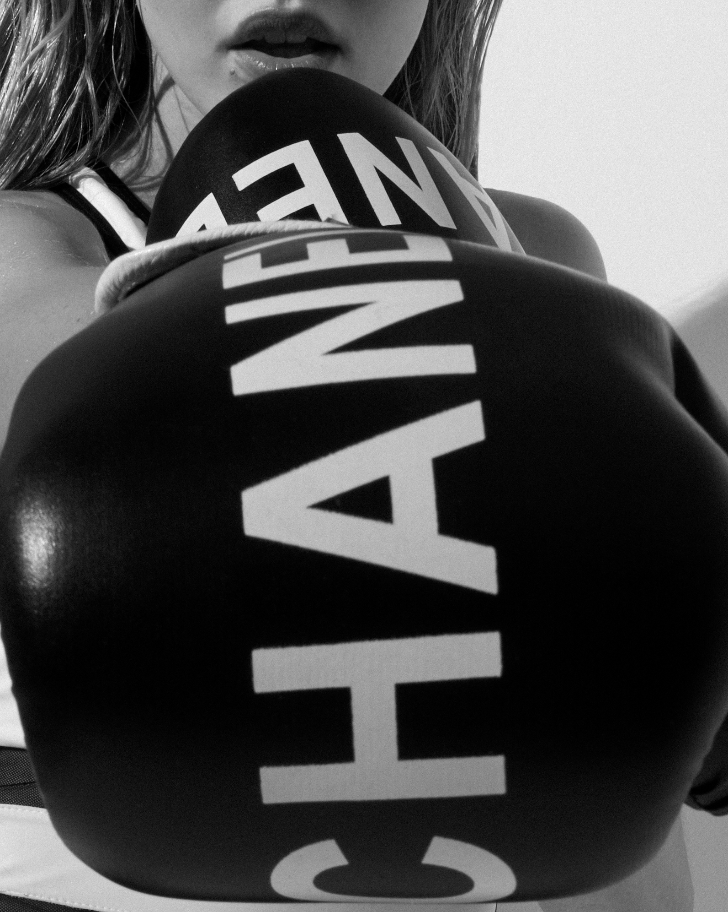
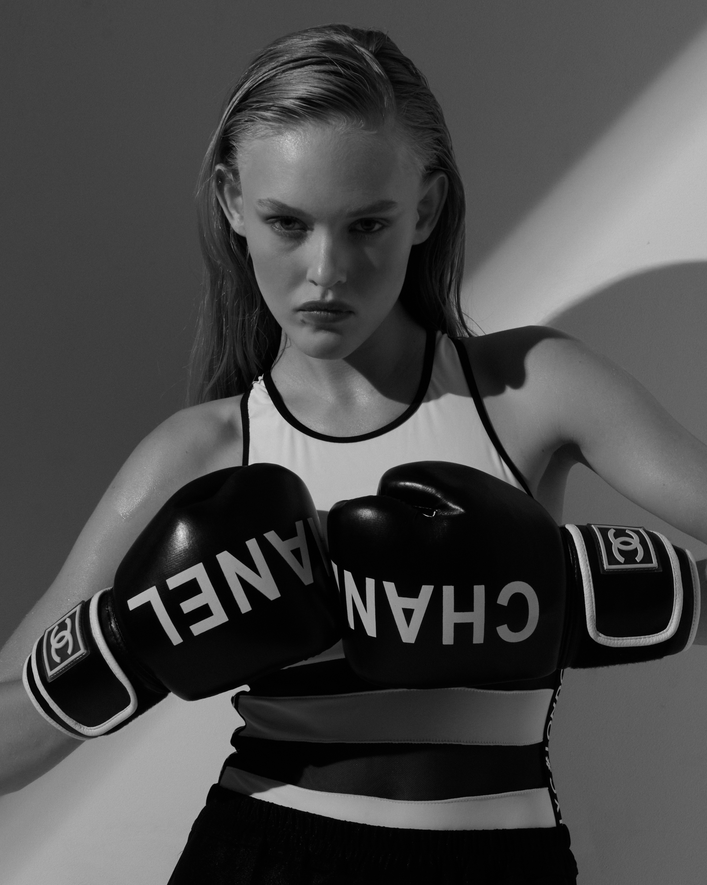
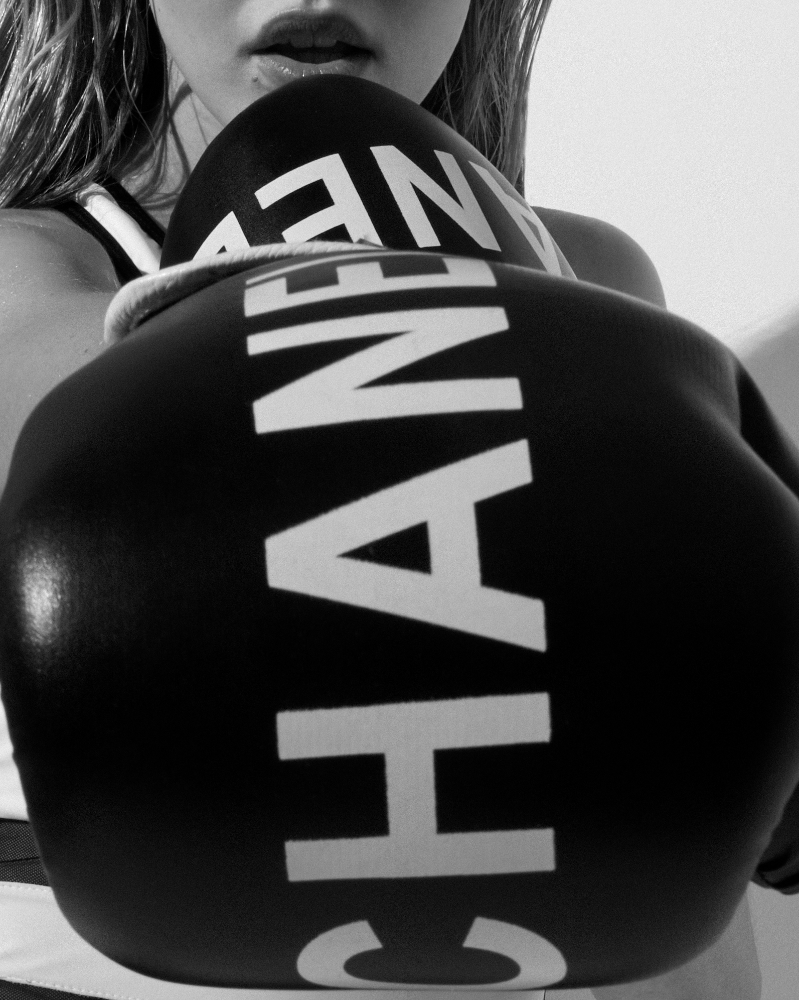
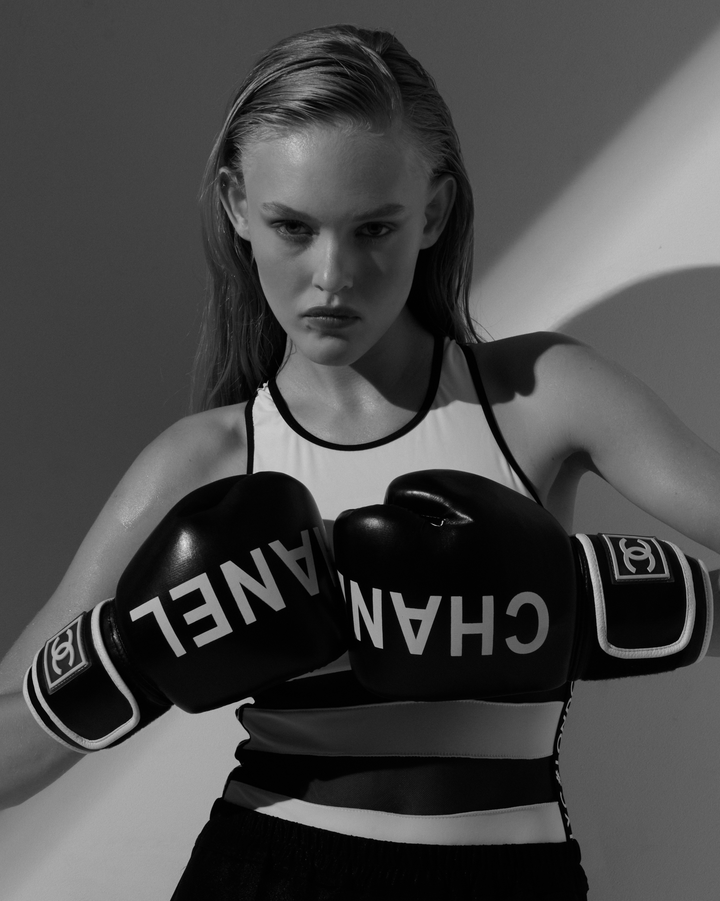
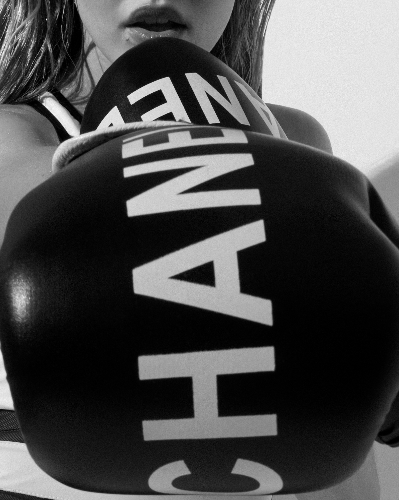
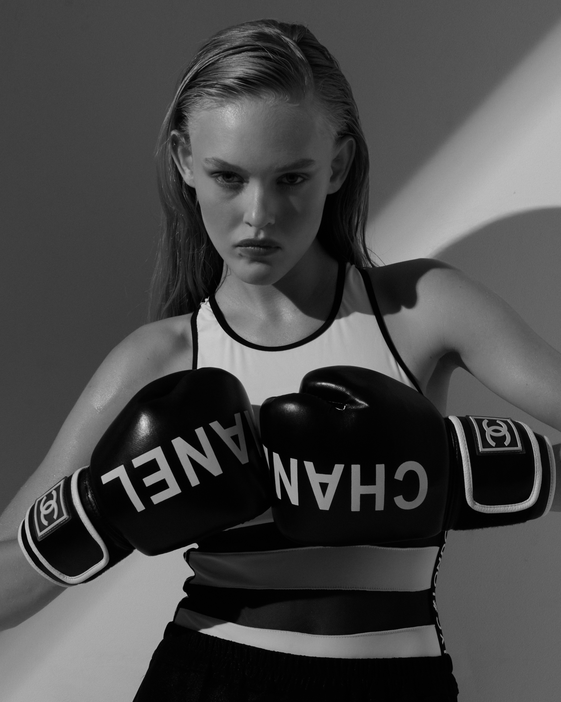

"RIVERLAND" is a photo project that I started several years ago while attending a workshop with Vanessa Winship and George Georgiou in France.
The series depicts various scenes - portraits, stills and landscapes, all taken in and around rivers / waters in southern France.
With the series, I attempt to portray the way a meandering river compares to the always and unexpected course life takes, and flows...
*
“Riverland is Dutch photographer Marjolein Martinot’s poetic response to the dark sci-fi nightmare that was the global pandemic. With pictures that arise almost dreamlike from the water at the centre of her story, she focuses on the people—children, parents, lovers—drawn to the river to escape the pervasive loneliness and fear. Evoking memories of a favourite childhood summer, her images wash over us like a baptism of sorts, offering a new beginning.”
– Bill Shapiro, 2022 Former Editor-in-Chief at LIFE Magazine, writer

